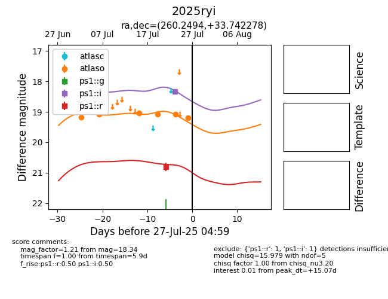

Target 2025ryi at 2025-08-05 18:28, see:
TNS: wis-tns.org/object/2025ryi
YSE: ziggy.ucolick.org/yse/transient_detail/2025ryi
alt names
2025ryi (yse,tns)
coordinates:
equatorial (ra, dec) = (260.2494,+33.74228)
galactic (l, b) = (57.3543,+32.53422)
photometry
last atlaso=18.96, ps1::i=18.69, ps1::r=20.61, ps1::y=15.63
12 atlaso, 2 ps1::i, 2 ps1::r, 1 ps1::y detections
